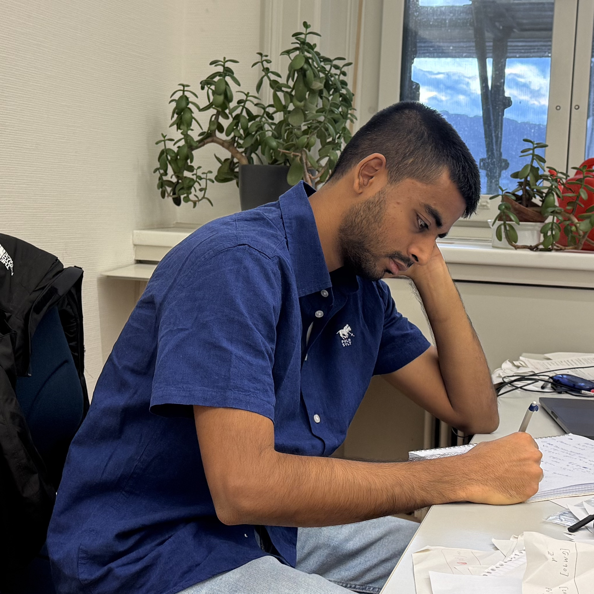

Ritvik Ramanan Radhakrishnan
I am a PhD student in mathematics at ETH Zürich, advised by Vincent Tassion. My research is in discrete probability and combinatorics, with a focus on percolation theory.
Previously, I was a master's student at ETH Zürich and an undergraduate at the Indian Statistical Institute, Bangalore.
